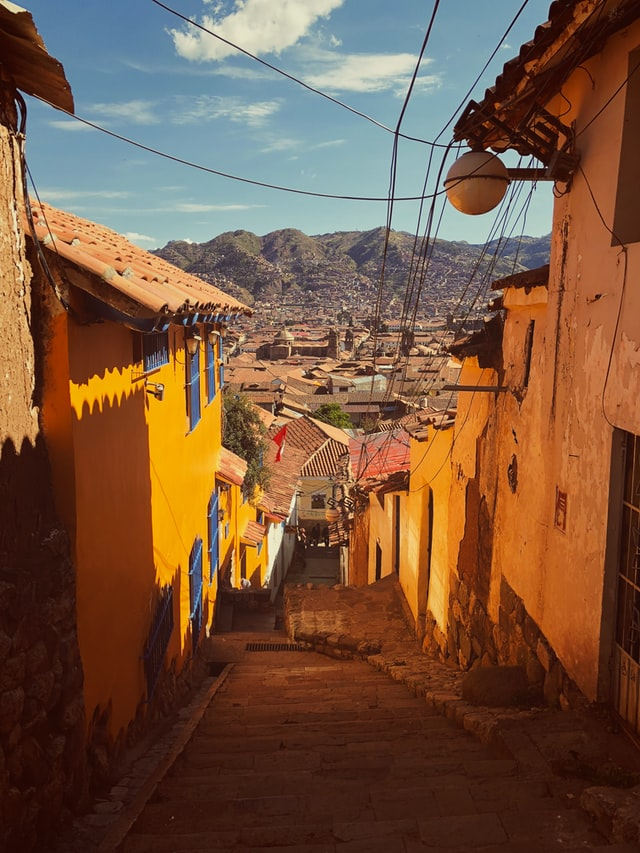
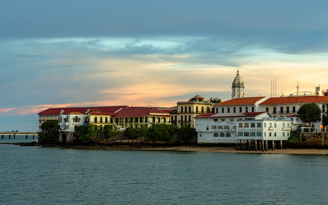
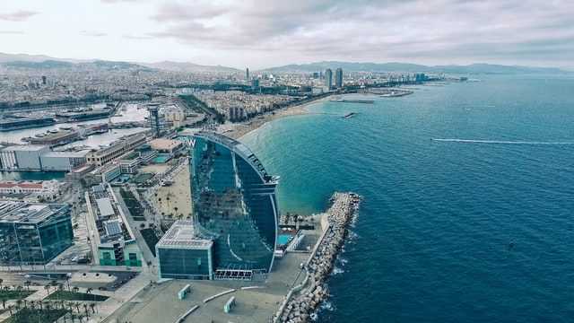

Cusco, Peru
Cusco is a small but bustling tourist town near Machu Picchu in Peru. They claim to be the most photographed tourist city in the world. Located at 11,152 feet above sea level, it's blend of shops and culture nestled in the Andes Mountains, the frequency of the rainstorms, and significant distance from the nation's capital appeals to my sense of disconnecting from society and reconnecting with nature and a larger being.
Photo by Joe Green

Panama City, Panama
While I was backpacking Latin America, my buddy and I spent time in Panama City, not knowing much about it. We went cave diving, did some hiking, and kayaked the canal. The experience was a blast, but most importantly, the people are very generous, and Casco Viejo is stunningly beautiful. Another appeal is how quiet it is making for pleasant strolls and friendlier interactions with locals.
Photo by Ignacio Hernandez

Barcelona, Spain
The beaches of Barcelona are spectacular, only rivaled by the sweeping views and cultural landmarks of the city. The food is amazing, and the nightlife is the most vibrant of any city I've ever been. The Gothic Quarter, similar to Paris’s Latin Quarter, is a set of narrow streets full of bars, restaurants, and cafes that is so much fun to engage in local culture. At night, it turns into one of the fun and most vibrant parts of the city. I would love to go back there again and again.
Photo by Benjamin Gremler